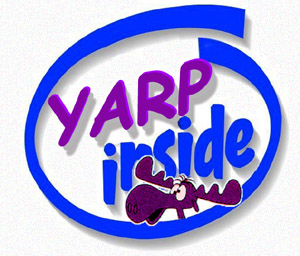

|
YARP |
- | Documentation and Downloads, project group page |
|
People |
- | Developers, Users, to sign up follow this link |
|
Distribution |
- | Licensing, OSI licenses, CVS repository, Download companion software |
|
Mailing lists |
- | Developers, Users, Announcement |
|
The cathedral and the bazaar |
- | On Linux and Open Source |
Random nostalgia: the first citation of YARP ever!

This page was last modified on 23/10/2006